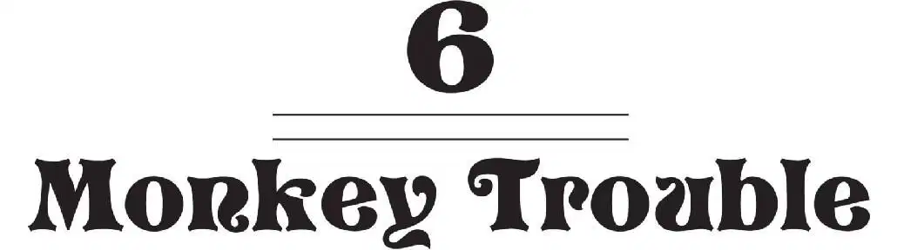
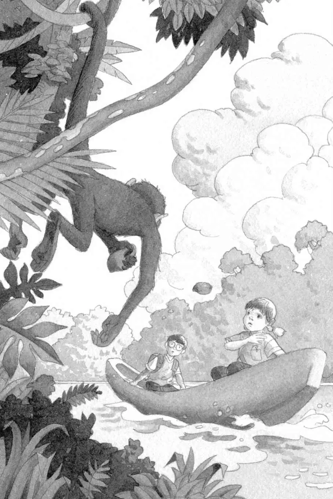

Squeak! Squeak! Peanut poked her head out from Annie’s pocket. She seemed to be yelling at the monkey.
“Don’t worry, Peanut,” said Annie. “He’s just a little monkey. He won’t hurt us.”
But suddenly the monkey grabbed a big red fruit hanging from the tree. He hurled it at the canoe.
“Watch it!” shouted Jack.
The fruit fell into the water with a splash.
The monkey screeched even louder.
He grabbed another fruit.
“Don’t throw things at us!” shouted Annie.
But the monkey hurled the red fruit right at them.

Jack and Annie ducked again. And the fruit splashed into the water.
“Stop that!” Annie shouted.
But the monkey only waved his arms and screeched again.
“Oh, brother,” said Jack. “I don’t believe this.”
The monkey grabbed a third fruit and hurled it at Jack and Annie. It landed inside the canoe with a thump.
Annie grabbed the fruit. She stood up and threw it back at the monkey.
She missed. The canoe rocked. Annie almost fell out.
The monkey screeched even louder.
“Go away!” Annie shouted. “You’re the meanest thing in the world!”
The monkey stopped screeching.
He looked at Annie. Then he swung away. Into the forest.
“I think I hurt his feelings,” said Annie.
“Who cares?” said Jack. “He shouldn’t throw things.”
“Uh-oh,” said Annie. “It’s raining now.”
“What?” Jack looked up. A raindrop hit him in the eye.
“Oh, no. I don’t believe this,” Jack said.
“What’d you expect?” said Annie. “It is the rain forest.”
A gust of wind blew the canoe.
Thunder rolled in the sky.
“A river’s a bad place to be in a storm,” said Jack. “We have to get back to shore. Right now.”
“But how?” said Annie. “We can’t wade or swim. The piranhas, the snake, and the crocodile will get us.”
Screeching split the air again.
“Oh, no,” said Jack. The bratty monkey was back.
This time, the monkey was pointing a long stick at the canoe.
Jack crouched down. Was the monkey going to hurl the stick at them? Like a spear?
Annie jumped up and faced the monkey.
“Watch it! He’s nuts,” said Jack.
But the monkey just stared at Annie. And Annie just stared back at him.
After a long moment, the monkey seemed to smile.
Annie smiled back.
“What’s going on?” said Jack.
“He wants to help us,” Annie said.
“Help us how?” said Jack.
The monkey held out the long stick.
Annie grabbed the other end.
The monkey pulled on the stick. The canoe started floating toward him.
The monkey pulled the canoe all the way to the bank of the river.